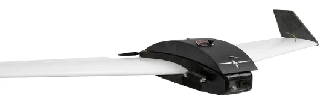
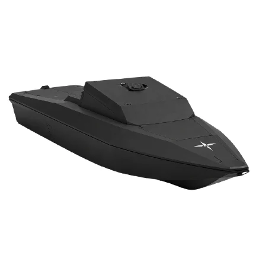
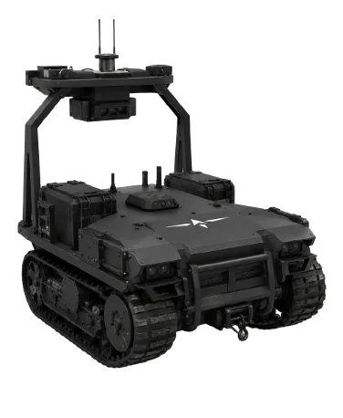
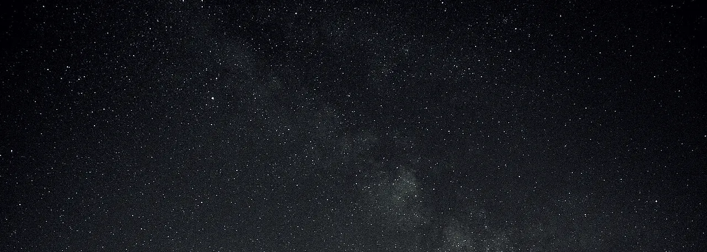

- Air / UAV
- StarNav + SolarNav
Fixed-wing, multi-rotor, loitering munitions
StarNav + SolarNav output via MAVLink, straight into the autopilot.
See it in the 3D demo →Passive GPS-denied navigation payload. Zero RF emissions. Day and night. UAV, USV and UGV platforms.
The same module keeps UAV, USV and UGV platforms on course without GPS.

StarNav + SolarNav output via MAVLink, straight into the autopilot.
See it in the 3D demo →
Navigation over open water, where map-matching fails entirely.
See it in the 3D demo →
Holds position in GPS-jammed environments.
See it in the 3D demo →Both modes are passive and zero-RF, and neither accumulates error.

Uses the night sky to compute absolute heading. No error accumulation.
Uses the sun to compute absolute heading, with continuous correction through daylight hours.
VIO and map-matching run alongside as a fallback: precise, short-term positioning when the sky is temporarily unavailable.